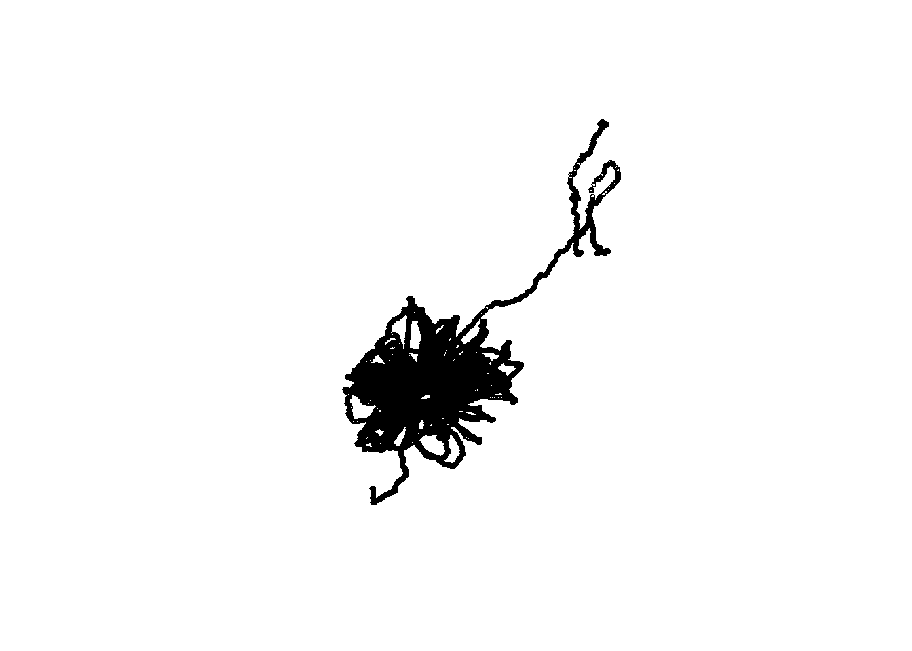
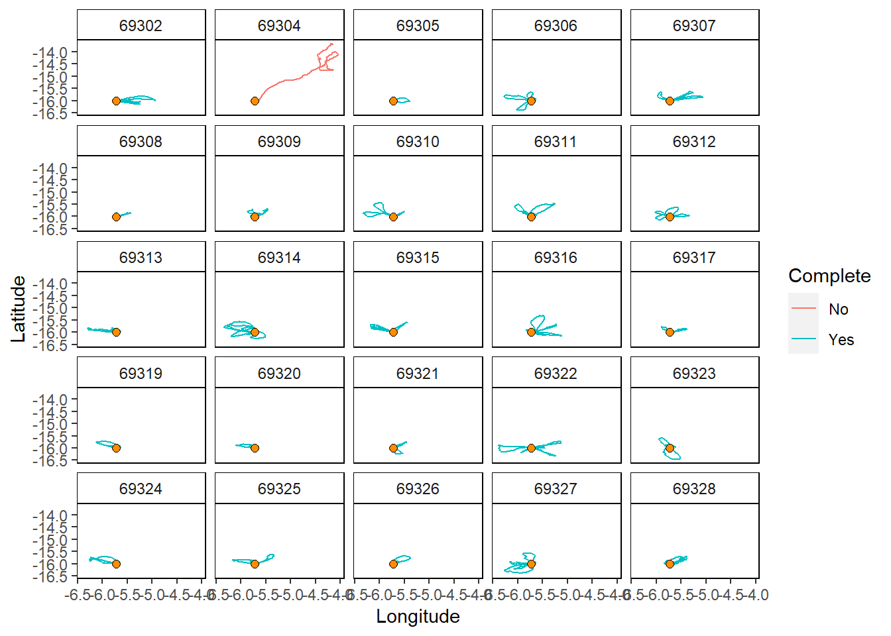
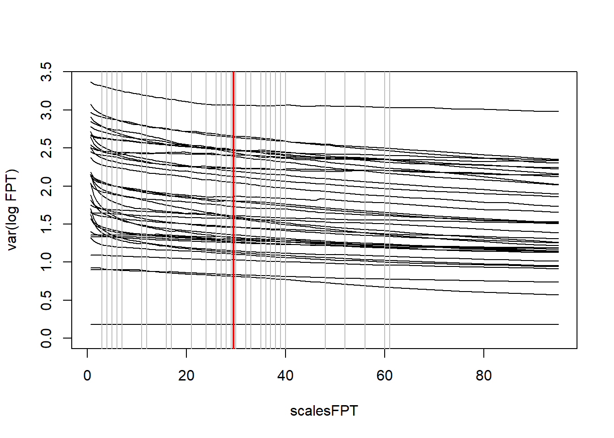
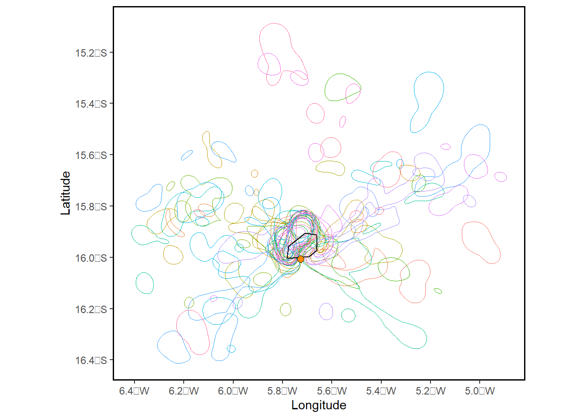
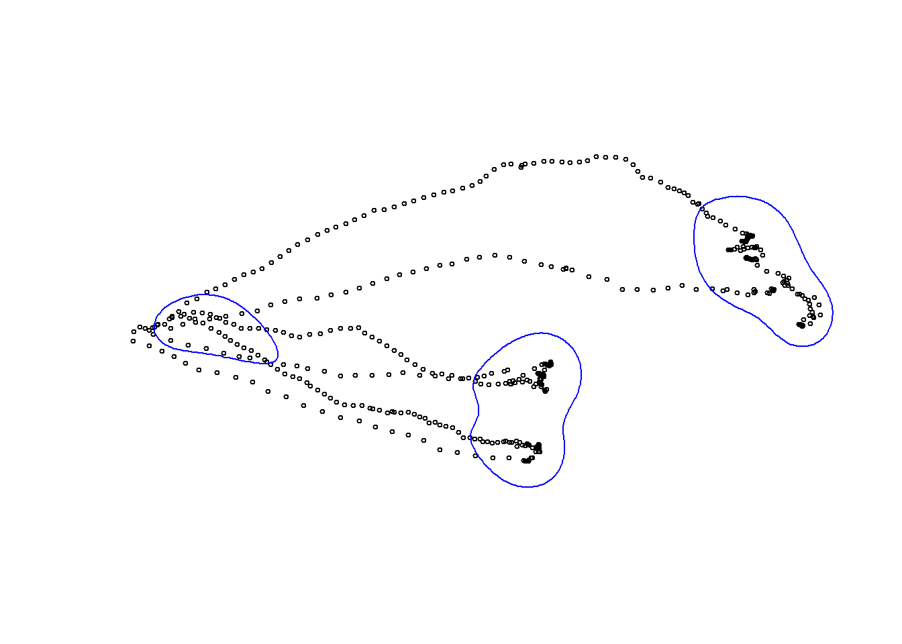
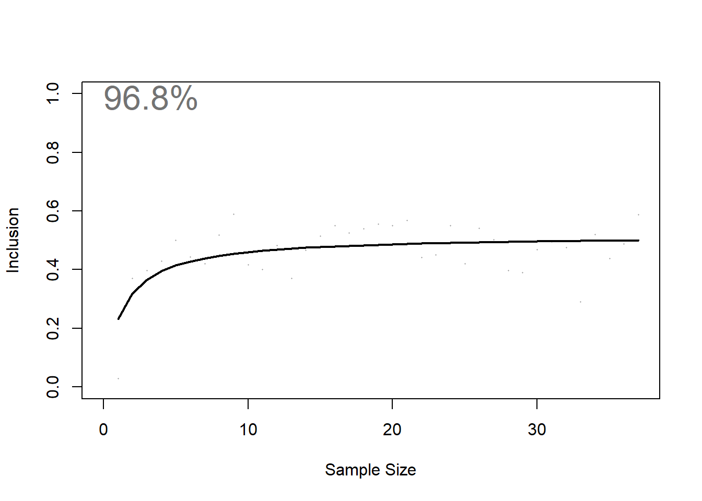

6 Track2KBA Guidance
This tutorial uses the example data for Masked Boobies associated with the track2KBA GitHub account: https://github.com/BirdLifeInternational/track2kba Supported by the manuscript: Beal et al. (2021). track2KBA: An R package for identifying important sites for biodiversity from tracking data. Methods in Ecology and Evolution.
The tutorial aims to further explain what the functions are doing and acts as a guide for inexperienced users. Users should consult this tutorial in conjunction with the 2021 manuscript, supplementary material and GitHub account.
While track2KBA is designed to allow minimal input from the user, users should understand the consequence of choices to input parameters while using the functions provided within track2KBA.
What does this tutorial cover:
Overview of the Track2KBA R package
Summary of the Track2KBA scientific paper
Incorporating further details from the Track2KBA paper supplementary material
Incorporating details from the supporting Track2KBA GitHub tutorial
Output(s) from this script, can be used to:
assess data against relevant criteria, such as:
or, for identification of sites from animal tracking data to be used in alternate spatial planning exercises.
This analysis was performed in R version 4.2.2 (2022-10-31 ucrt)
This document was last updated on 2023-05-09
6.1 Load packages
Load required R packages:
If the packages fail to load, you will need to install the relevant packages.
## ~~~~~~~~~~~~~~~~~~~~~~~~~~~~~~~~~~~~~~~~~~~~~~~~~~~~~~~~~~~~~~~~~~~~~~~~~~~~~
## Load libraries --------------------------------------------------------------
## ~~~~~~~~~~~~~~~~~~~~~~~~~~~~~~~~~~~~~~~~~~~~~~~~~~~~~~~~~~~~~~~~~~~~~~~~~~~~~
library(track2KBA)
library(tidyverse)
library(readxl)
library(sf)
library(xlsx)
library(sp)
library(gridExtra)
library(viridis)Before you use track2KBA to identify a final site for assessmenent you must consider the following:
The dataGroup: Does your data sufficiently represent a unique dataGroup? See guidance.
Cleaned data: Has your tracking data been cleaned sufficiently? I.e. have you removed likely incorrect locations from your tracking data?
Regularised data: Does your tracking data represent locations evenly sampled in time?
To regularise your tracking data so locations are evenly sampled in time, you may need to interpolate your tracking data. The typical options we consider are interpolation via linear interpolation, or the more advanced method of interpolation via “CRAWL”.
Load example data available with the manuscript
- Example data from Masked Boobies during the breeding period. Birds during this time are typically exhibiting central place foraging behaviour.
Consider: How should your data be formatted?
You should have a dataframe which has at least five columns relating to:
“ID” of the animal(s) you tracked
further details tbc
6.2 Download example data and format
## Load the data
data(boobies)
## view the first two rows of the data
head(boobies,2)## track_id date_gmt time_gmt longitude latitude lon_colony lat_colony
## 1 69302 2012-07-22 04:17:15 -5.72638 -16.00711 -5.73 -16.01
## 2 69302 2012-07-22 04:28:57 -5.72642 -16.00716 -5.73 -16.01## ~~~~~~~~~~~~~~~~~~~~~~~~~~~~~~~~~~~~~~~~~~~~~~~~~~~~~~~~~~~~~~~~~~~~~~~~~~~~~
## track2KBA::formatFields() ----
## ~~~~~~~~~~~~~~~~~~~~~~~~~~~~~~~~~~~~~~~~~~~~~~~~~~~~~~~~~~~~~~~~~~~~~~~~~~~~~
## Format the key data fields to the standard used in track2KBA
dataGroup <- formatFields(
dataGroup = boobies,
fieldID = "track_id",
fieldDate = "date_gmt",
fieldTime = "time_gmt",
fieldLon = "longitude",
fieldLat = "latitude"
)
## review the outputs - first what the new data looks like
head(dataGroup,2)## ID date_gmt time_gmt Longitude Latitude lon_colony lat_colony
## 1 69302 2012-07-22 04:17:15 -5.72638 -16.00711 -5.73 -16.01
## 2 69302 2012-07-22 04:28:57 -5.72642 -16.00716 -5.73 -16.01
## DateTime
## 1 2012-07-22 04:17:15
## 2 2012-07-22 04:28:57## review the outputs - then details of each column (i.e. vector) class
str(dataGroup)## 'data.frame': 178006 obs. of 8 variables:
## $ ID : chr "69302" "69302" "69302" "69302" ...
## $ date_gmt : chr "2012-07-22" "2012-07-22" "2012-07-21" "2012-07-21" ...
## $ time_gmt : chr "04:17:15" "04:28:57" "13:04:33" "13:18:24" ...
## $ Longitude : num -5.73 -5.73 -5.73 -5.73 -5.73 ...
## $ Latitude : num -16 -16 -16 -16 -16 ...
## $ lon_colony: num -5.73 -5.73 -5.73 -5.73 -5.73 -5.73 -5.73 -5.73 -5.73 -5.73 ...
## $ lat_colony: num -16 -16 -16 -16 -16 ...
## $ DateTime : POSIXct, format: "2012-07-22 04:17:15" "2012-07-22 04:28:57" ...
## - attr(*, ".internal.selfref")=<externalptr>6.3 Quick plot all data
Simple plot of all the data for a quick review:
## ~~~~~~~~~~~~~~~~~~~~~~~~~~~~~~~~~~~~~~~~~~~~~~~~~~~~~~~~~~~~~~~~~~~~~~~~~~~~~
## view all data ----
## ~~~~~~~~~~~~~~~~~~~~~~~~~~~~~~~~~~~~~~~~~~~~~~~~~~~~~~~~~~~~~~~~~~~~~~~~~~~~~
## quick plot of all data for a quick overview
dataGroup.plot <- st_as_sf(dataGroup, coords = c("Longitude", "Latitude"), crs=4326) # 4326 = geographic WGS84
plot(st_geometry(dataGroup.plot),
cex = 0.5,
pch = 1)
## number of datapoints
nrow(dataGroup)## [1] 1780066.4 tripSplit()
Set up some of the input parameters needed for the tripSplit() function
## ~~~~~~~~~~~~~~~~~~~~~~~~~~~~~~~~~~~~~~~~~~~~~~~~~~~~~~~~~~~~~~~~~~~~~~~~~~~~~
## Define colony ----
## ~~~~~~~~~~~~~~~~~~~~~~~~~~~~~~~~~~~~~~~~~~~~~~~~~~~~~~~~~~~~~~~~~~~~~~~~~~~~~
## example relates to a seabird during the breeding season, when the species
## is known to be a central place forager, therefore, define the colony position
colony <- dataGroup %>%
summarise(
Longitude = first(Longitude),
Latitude = first(Latitude)
)The tripSplit() function
If your data does not relate to a central place forager (CPF), OR a time when an animal may be exhibiting central place foraging behaviours, then skip this section and those relating to CPF data
This step is often very useful to help automate the removal of location points on land, or near the vicinty of a colony. We don’t want these extra points to bias our interpretation of the data.
## ~~~~~~~~~~~~~~~~~~~~~~~~~~~~~~~~~~~~~~~~~~~~~~~~~~~~~~~~~~~~~~~~~~~~~~~~~~~~~
## tripSplit() ----
## Input is a 'data.frame' of tracking data and the central-place location.
## Output is a 'SpatialPointsDataFrame'.
trips <- tripSplit(
dataGroup = dataGroup,
colony = colony,
innerBuff = 3, # km - defines distance an animal must travel to count as trip started
returnBuff = 10, # km - defines distance an animal must be from the colony to have returned and thus completed a trip
duration = 1, # hours - defines time an animal must have travelled away from the colony to count as a trip. helps remove glitches in data or very short trips that were likely not foraging trips.
rmNonTrip = TRUE # If true - points not associated with a trip will be removed
)
## Review data after tripSplit()
head(trips,2)## coordinates ID date_gmt time_gmt Longitude Latitude
## 706 (-5.69104, -16.0065) 69302 2012-07-22 07:52:11 -5.69104 -16.00650
## 707 (-5.68132, -16.001) 69302 2012-07-22 07:53:50 -5.68132 -16.00096
## lon_colony lat_colony DateTime tripID X Y
## 706 -5.73 -16.01 2012-07-22 07:52:11 69302_01 -5.69104 -16.00650
## 707 -5.73 -16.01 2012-07-22 07:53:50 69302_01 -5.68132 -16.00096
## Returns StartsOut ColDist
## 706 Yes 3783.071
## 707 Yes 4870.651
## Coordinate Reference System (CRS) arguments: +proj=longlat +datum=WGS84
## +no_defs## Assess number of points associated with a trip
## Yes: indicates a point is associated with a trip
## No: not associated with a trip
## If you specified rmNonTrip = FALSE above, then you will also get points (data) relating to the locations that would be filtered out from the tripSplit function
table(trips$Returns)##
## No Yes
## 1733 26717## ~~~~~~~~~~~~~~~~~~~~~~~~~~~~~~~~~~~~~~~~~~~~~~~~~~~~~~~~~~~~~~~~~~~~~~~~~~~~~
## mapTrips() ----
## view data after splitting into trips ----
## ~~~~~~~~~~~~~~~~~~~~~~~~~~~~~~~~~~~~~~~~~~~~~~~~~~~~~~~~~~~~~~~~~~~~~~~~~~~~~
## plot quick overview of trips recorded for individual birds
mapTrips(trips = trips, colony = colony)
6.5 tripSummary()
Summarise the tracking data using the tripSummary() function:
## ~~~~~~~~~~~~~~~~~~~~~~~~~~~~~~~~~~~~~~~~~~~~~~~~~~~~~~~~~~~~~~~~~~~~~~~~~~~~~
## Filter and summary of number of trips after splitting tracks ----
## ~~~~~~~~~~~~~~~~~~~~~~~~~~~~~~~~~~~~~~~~~~~~~~~~~~~~~~~~~~~~~~~~~~~~~~~~~~~~~
## Before summarizing the trip movements, using tripSummary().
## First, we can filter out data from trips that did not return to the vicinity
## of the colony (i.e. within returnBuff), so they don't skew the estimates.
## Let's also check how many trips we record as Yes vs. No before filtering
## Instead of looking at points associated with an invidual trip, looked at how
## many uniqu trips you have across all individuals. i.e. the total number of trips
## represented by each time an animal departed and returned to the colony
## summarise the data
totalTripsAll <- data.frame(trips) %>% group_by(tripID, Returns) %>%
summarise(count = n()) %>%
data.frame(.)
## inspect the total number of unique trips
table(totalTripsAll$Returns)##
## No Yes
## 2 213## Filter to only include trips that return
trips <- subset(trips, trips$Returns == "Yes" )
## review that you have only chosen trips that return
totalTripsYes <- data.frame(trips) %>% group_by(tripID, Returns) %>%
summarise(count = n()) %>%
data.frame(.)
## inspect total number of unique trips
table(totalTripsYes$Returns)##
## Yes
## 213## ~~~~~~~~~~~~~~~~~~~~~~~~~~~~~~~~~~~~~~~~~~~~~~~~~~~~~~~~~~~~~~~~~~~~~~~~~~~~~
## tripSummary() ----
## Rough summary of tracking data for complete trips ----
## ~~~~~~~~~~~~~~~~~~~~~~~~~~~~~~~~~~~~~~~~~~~~~~~~~~~~~~~~~~~~~~~~~~~~~~~~~~~~~
sumTrips <- tripSummary(trips = trips, colony = colony)
## Check you only have complete trips here (if that is what you are aiming for)
table(sumTrips$complete)##
## complete trip
## 213## filter for only complete trips if needed
#sumTrips <- sumTrips %>% dplyr::filter(complete= "complete trip")
## view output
head(sumTrips ,10)## # A tibble: 10 × 10
## # Groups: ID [4]
## ID tripID n_locs departure return durat…¹ total…²
## <chr> <chr> <dbl> <dttm> <dttm> <dbl> <dbl>
## 1 69302 69302_01 274 2012-07-22 07:52:11 2012-07-22 16:11:03 8.31 207.
## 2 69302 69302_02 124 2012-07-23 12:26:22 2012-07-23 15:54:05 3.46 111.
## 3 69302 69302_03 138 2012-07-25 08:30:53 2012-07-25 12:22:53 3.87 116.
## 4 69305 69305_01 71 2013-08-22 13:08:15 2013-08-22 15:10:59 2.05 91.6
## 5 69306 69306_01 37 2014-01-06 16:28:42 2014-01-06 17:32:11 1.06 46.2
## 6 69306 69306_02 83 2014-01-07 14:48:24 2014-01-07 17:10:21 2.37 114.
## 7 69306 69306_03 129 2014-01-08 14:25:11 2014-01-08 17:55:22 3.50 143.
## 8 69306 69306_04 50 2014-01-08 18:08:32 2014-01-08 19:30:40 1.37 56.1
## 9 69306 69306_05 155 2014-01-09 14:47:04 2014-01-09 19:21:32 4.57 161.
## 10 69307 69307_01 133 2014-01-06 14:04:22 2014-01-06 17:53:01 3.81 144.
## # … with 3 more variables: max_dist <dbl>, direction <dbl>, complete <chr>, and
## # abbreviated variable names ¹duration, ²total_dist## view unique individual ID
unique(sumTrips$ID)## [1] "69302" "69305" "69306" "69307" "69308" "69309" "69310" "69311" "69312"
## [10] "69313" "69314" "69315" "69316" "69317" "69319" "69320" "69321" "69322"
## [19] "69323" "69324" "69325" "69326" "69327" "69328" "69329" "69330" "69331"
## [28] "69332" "69333" "69334" "69335" "69336" "69337" "69338" "69339" "69340"
## [37] "69341" "69342" "69343" "69344"## number of individuals with tracking data
length(unique(sumTrips$ID))## [1] 40## number of unique trips from all individuals
length(unique(sumTrips$tripID))## [1] 2136.6 projectTracks()
track2KBA uses Kernel Density Estimation (KDE) to produce space use estimates for each individual track. In order for these to be accurate, we need to transform the tracking data to an equal-area projection.
## review your input data
head(data.frame(trips),2)## ID date_gmt time_gmt Longitude Latitude lon_colony lat_colony
## 706 69302 2012-07-22 07:52:11 -5.69104 -16.00650 -5.73 -16.01
## 707 69302 2012-07-22 07:53:50 -5.68132 -16.00096 -5.73 -16.01
## DateTime tripID X Y Returns StartsOut ColDist
## 706 2012-07-22 07:52:11 69302_01 -5.69104 -16.00650 Yes 3783.071
## 707 2012-07-22 07:53:50 69302_01 -5.68132 -16.00096 Yes 4870.651
## dataGroup.Longitude dataGroup.Latitude optional
## 706 -5.69104 -16.00650 TRUE
## 707 -5.68132 -16.00096 TRUE## run the function
tracks <- projectTracks(dataGroup = trips, projType = 'azim', custom=TRUE )
class(tracks)## [1] "SpatialPointsDataFrame"
## attr(,"package")
## [1] "sp"str(tracks)## Formal class 'SpatialPointsDataFrame' [package "sp"] with 5 slots
## ..@ data :'data.frame': 26717 obs. of 14 variables:
## .. ..$ ID : chr [1:26717] "69302" "69302" "69302" "69302" ...
## .. ..$ date_gmt : chr [1:26717] "2012-07-22" "2012-07-22" "2012-07-22" "2012-07-22" ...
## .. ..$ time_gmt : chr [1:26717] "07:52:11" "07:53:50" "07:55:29" "07:57:08" ...
## .. ..$ Longitude : num [1:26717] -5.69 -5.68 -5.67 -5.66 -5.65 ...
## .. ..$ Latitude : num [1:26717] -16 -16 -16 -16 -16 ...
## .. ..$ lon_colony: num [1:26717] -5.73 -5.73 -5.73 -5.73 -5.73 -5.73 -5.73 -5.73 -5.73 -5.73 ...
## .. ..$ lat_colony: num [1:26717] -16 -16 -16 -16 -16 ...
## .. ..$ DateTime : POSIXct[1:26717], format: "2012-07-22 07:52:11" "2012-07-22 07:53:50" ...
## .. ..$ tripID : chr [1:26717] "69302_01" "69302_01" "69302_01" "69302_01" ...
## .. ..$ X : num [1:26717] -5.69 -5.68 -5.67 -5.66 -5.65 ...
## .. ..$ Y : num [1:26717] -16 -16 -16 -16 -16 ...
## .. ..$ Returns : chr [1:26717] "Yes" "Yes" "Yes" "Yes" ...
## .. ..$ StartsOut : chr [1:26717] "" "" "" "" ...
## .. ..$ ColDist : num [1:26717] 3783 4871 6407 7759 9007 ...
## ..@ coords.nrs : num(0)
## ..@ coords : num [1:26717, 1:2] -89305 -88267 -86835 -85672 -84723 ...
## .. ..- attr(*, "dimnames")=List of 2
## .. .. ..$ : NULL
## .. .. ..$ : chr [1:2] "dataGroup.Longitude" "dataGroup.Latitude"
## ..@ bbox : num [1:2, 1:2] -165053 -113911 -2549 39853
## .. ..- attr(*, "dimnames")=List of 2
## .. .. ..$ : chr [1:2] "dataGroup.Longitude" "dataGroup.Latitude"
## .. .. ..$ : chr [1:2] "min" "max"
## ..@ proj4string:Formal class 'CRS' [package "sp"] with 1 slot
## .. .. ..@ projargs: chr "+proj=laea +lat_0=-15.5025687761751 +lon_0=-4.85666111798403 +x_0=0 +y_0=0 +datum=WGS84 +units=m +no_defs"
## .. .. ..$ comment: chr "PROJCRS[\"unknown\",\n BASEGEOGCRS[\"unknown\",\n DATUM[\"World Geodetic System 1984\",\n "| __truncated__## compare input vs. output
head(data.frame(trips),2)## ID date_gmt time_gmt Longitude Latitude lon_colony lat_colony
## 706 69302 2012-07-22 07:52:11 -5.69104 -16.00650 -5.73 -16.01
## 707 69302 2012-07-22 07:53:50 -5.68132 -16.00096 -5.73 -16.01
## DateTime tripID X Y Returns StartsOut ColDist
## 706 2012-07-22 07:52:11 69302_01 -5.69104 -16.00650 Yes 3783.071
## 707 2012-07-22 07:53:50 69302_01 -5.68132 -16.00096 Yes 4870.651
## dataGroup.Longitude dataGroup.Latitude optional
## 706 -5.69104 -16.00650 TRUE
## 707 -5.68132 -16.00096 TRUEhead(data.frame(tracks),2)## ID date_gmt time_gmt Longitude Latitude lon_colony lat_colony
## 706 69302 2012-07-22 07:52:11 -5.69104 -16.00650 -5.73 -16.01
## 707 69302 2012-07-22 07:53:50 -5.68132 -16.00096 -5.73 -16.01
## DateTime tripID X Y Returns StartsOut ColDist
## 706 2012-07-22 07:52:11 69302_01 -5.69104 -16.00650 Yes 3783.071
## 707 2012-07-22 07:53:50 69302_01 -5.68132 -16.00096 Yes 4870.651
## dataGroup.Longitude dataGroup.Latitude optional
## 706 -89304.69 -55936.88 TRUE
## 707 -88266.78 -55319.80 TRUE## compare projections
proj4string(trips)## [1] "+proj=longlat +datum=WGS84 +no_defs"proj4string(tracks)## [1] "+proj=laea +lat_0=-15.5025687761751 +lon_0=-4.85666111798403 +x_0=0 +y_0=0 +datum=WGS84 +units=m +no_defs"NOTE: Above you have changed your main object name from trips to tracks
##findScale()
findScale() provides options for setting the all-important smoothing parameter in the KDE.
findScale() calculates candidate smoothing parameter values using different methods.
Choosing the ‘optimal’ smoothing parameter is critical. See GitHub page. Consider what further advice we can give to users regarding choice of smoothing parameter?
hVals <- findScale(
tracks = tracks,
scaleARS = TRUE,
sumTrips = sumTrips)
## Review output
hVals## med_max_dist step_length mag href scaleARS
## 1 22.97 0.92 3.13 5.78 29.5## must choose between one of three smoothing parameters for further analyses
## smoothing parameter is distance in km. Read more in supporting documents.
## Review each outputted smoothing parameter option
hVals$mag # affected by range of animal movement. Only works for central place foragers.## [1] 3.13hVals$href # sort of represents quality of data## [1] 5.78hVals$scaleARS # affected by quality of data and subsequent ability to determine scale at which animal interacts with environment. Learn more about First Passage Time analysis## [1] 29.56.7 estSpaceUse()
#~~~~~~~~~~~~~~~~~~~~~~~~~~~~~~~~~~~~~~~~~~~~~~~~~~~~~~~~~~~~~~~~~~~~~~~~~~~~~~~
## estSpaceUse() ----
## Produce KDEs for each individual
## Note: here we might want to remove the trip start and end points that fall
## within the innerBuff distance we set in tripSplit, so that they don't skew
## the at-sea distribution towards to colony.
#~~~~~~~~~~~~~~~~~~~~~~~~~~~~~~~~~~~~~~~~~~~~~~~~~~~~~~~~~~~~~~~~~~~~~~~~~~~~~~~
## review input again
head(data.frame(tracks),2)## ID date_gmt time_gmt Longitude Latitude lon_colony lat_colony
## 706 69302 2012-07-22 07:52:11 -5.69104 -16.00650 -5.73 -16.01
## 707 69302 2012-07-22 07:53:50 -5.68132 -16.00096 -5.73 -16.01
## DateTime tripID X Y Returns StartsOut ColDist
## 706 2012-07-22 07:52:11 69302_01 -5.69104 -16.00650 Yes 3783.071
## 707 2012-07-22 07:53:50 69302_01 -5.68132 -16.00096 Yes 4870.651
## dataGroup.Longitude dataGroup.Latitude optional
## 706 -89304.69 -55936.88 TRUE
## 707 -88266.78 -55319.80 TRUE#min(tracks$ColDist)
warning("Must update GitHub tutorial which specifies distance incorrectly")
## remove trip start and end points near colony - distance is in m (unlike innerBuff where distance was in km)
proj4string(tracks)## [1] "+proj=laea +lat_0=-15.5025687761751 +lon_0=-4.85666111798403 +x_0=0 +y_0=0 +datum=WGS84 +units=m +no_defs"tracks <- tracks[tracks$ColDist > 3*1000, ]
## produce the KDEs for each individual
## NOTE: The grid cell size (i.e., grid resolution) should be less than the
## selected h value, otherwise the entire space use area of the animal may be
## encompassed in few cells
KDE <- estSpaceUse(
tracks = tracks,
scale = hVals$mag,
levelUD = 50,
polyOut = TRUE
)
## use the simple mapping function to get an overview of UDs for individuals
mapKDE(KDE = KDE$UDPolygons, colony = colony)
6.8 Review smoothing
After applying estSpaceUse and viewing plot with mapKDE, at this step we should
verify that the smoothing parameter value we selected is producing reasonable
space use estimates, given what we know about our study animals. Are the core
areas much larger than expected? Much smaller? If so, consider using a different
value for the scale parameter.
## convert to sf object
trips_sf_IndBird <- st_as_sf(trips) %>%
dplyr::filter(ID == unique(trips$ID)[1])
## get the UD for a single individual
ud_sf_IndBird <- KDE$UDPolygons %>%
dplyr::filter(id == trips_sf_IndBird$ID[1]) %>%
st_transform(.,crs = st_crs(trips_sf_IndBird))
## Plot OVERALL data again for first single individual
plot(st_geometry(trips_sf_IndBird),
cex = 0.5,
pch = 1)
## and add the UD to the plot
plot(st_geometry(ud_sf_IndBird),add=T, border = "blue")
## Determine number of points captured in UD
## sf::sf_use_s2(FALSE) # run this if issues with st_intersection: https://stackoverflow.com/questions/68478179/how-to-resolve-spherical-geometry-failures-when-joining-spatial-data
## PointsInUD <- st_intersection(trips_sf_IndBird, ud_sf_IndBird)
## nrow(trips_sf_IndBird)
## length(unique(PointsInUD$DateTime))
## length(unique(PointsInUD$DateTime)) / nrow(trips_sf_IndBird) * 100
warning("Assess whether your selected smoothing parameter has resulted in sensible
Utilisation Distributions.")
warning("Can we use the above to consider some form of test to guide smoothing
parameter choice?.")6.9 repAssess()
Estimate how representative this sample of animals is of the population.
NOTE: iterations should be set to 100 at a minimum when running the script officially.
#~~~~~~~~~~~~~~~~~~~~~~~~~~~~~~~~~~~~~~~~~~~~~~~~~~~~~~~~~~~~~~~~~~~~~~~~~~~~~~~
## repAssess() ----
## estimate how representative this sample of animals is of the population.
#~~~~~~~~~~~~~~~~~~~~~~~~~~~~~~~~~~~~~~~~~~~~~~~~~~~~~~~~~~~~~~~~~~~~~~~~~~~~~~~
"NOTE: See iterations"## [1] "NOTE: See iterations"repr <- repAssess(
tracks = tracks,
KDE = KDE$KDE.Surface,
levelUD = 50,
iteration = 1, ## iterations should be set to 100 at a minimum when running the script officially
bootTable = FALSE)
6.10 findSite()
#~~~~~~~~~~~~~~~~~~~~~~~~~~~~~~~~~~~~~~~~~~~~~~~~~~~~~~~~~~~~~~~~~~~~~~~~~~~~~~~
## findSite() ----
## using findSite we can identify areas where animals are overlapping in space
## and delineate sites that meet some criteria of importance.
#~~~~~~~~~~~~~~~~~~~~~~~~~~~~~~~~~~~~~~~~~~~~~~~~~~~~~~~~~~~~~~~~~~~~~~~~~~~~~~~
# ## indicate the population size of your source populaiton. e.g. the population size
# ## of the colony from which you tracked birds. For KBA identification, this estimate
# ## should be in Mature Individuals.
# ## I.e. for seabird colonies: breeding pairs * 2 = mature individuals
# SourcePopulationSize = 500
#
# ## findSite function
# Site_PolyTrue <- findSite(
# KDE = KDE$KDE.Surface,
# represent = repr$out,
# levelUD = 50,
# popSize = SourcePopulationSize, # 500 individual seabirds breed one the island
# polyOut = TRUE
# )
#
# ## review outputs
# dim(Site_PolyTrue)
#
# ## plot option
# Sitemap_PolyTrue <- mapSite(Site_PolyTrue, colony = colony)
#
# ## review output object
# Sitemap_PolyTrue
#
# ## If in findSite we instead specify polyOut=FALSE, our output will be a spatial
# ## grid of animal densities, with each cell representing the estimated number, or
# ## percentage of animals using that area. So this output is independent of the
# ## representativness-based importance threshold. i.e. the output indicates
# ## only the areas used by more or less individuals that you tracked, it does not
# ## give you a polygon that you would necessarily assess against IBA / KBA criteria.
# ## The output also does not use the representatives measure to estimate the OVERALL
# ## number of individuals that are likely using certain areas when you specify the
# ## popSize of your source population.
#
# ## findSite with polyOut=FALSE
# Site_PolyFalse <- findSite(
# KDE = KDE$KDE.Surface,
# represent = repr$out,
# levelUD = 50,
# popSize = SourcePopulationSize, # 500 individual seabirds breed one the island
# polyOut = FALSE
# )
#
# ## review outputs
# dim(Site_PolyFalse)
# max(Site_PolyFalse@data$N_IND)
# max(Site_PolyFalse@data$N_animals)
# head(unique(Site_PolyFalse@data$ID_IND))
#
# ## simple plot option
# Sitemap_PolyFalse <- mapSite(Site_PolyFalse, colony = colony)
#
# ## review output object
# Sitemap_PolyFalse